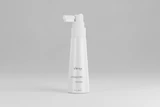

Three months in and the shedding stopped
I was losing hair after my second baby. Three months of the serum every other night and the shower drain is finally clean. New growth at the temples too.
Verified purchase VELLO Hair Fertilization Therapy ALFA-LACTOBABY — 90ml / 3 fl.oz